Japan
Datsun
Datsun is a former car brand from Japan, founded in 1931. This page lists 22 of its models and their generations, with facts from Wikipedia.

- Founded
- 1931
- Models
- 22
- Generations
- 22
- Photos
- 16
All models and generations
22 models, each with all its generations.
Past models
- Datsun Go
- Datsun redi-Go
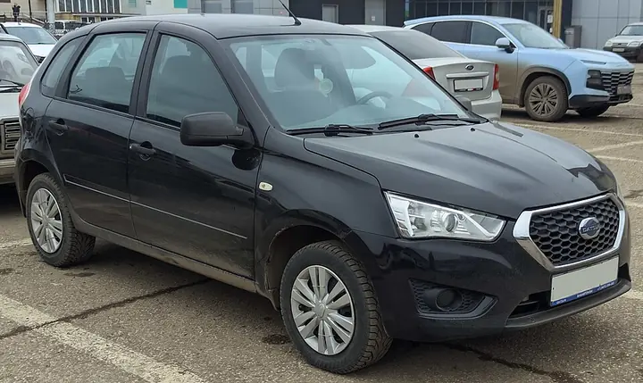
Datsun mi-Do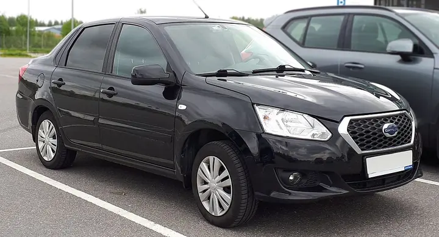
Datsun on-Do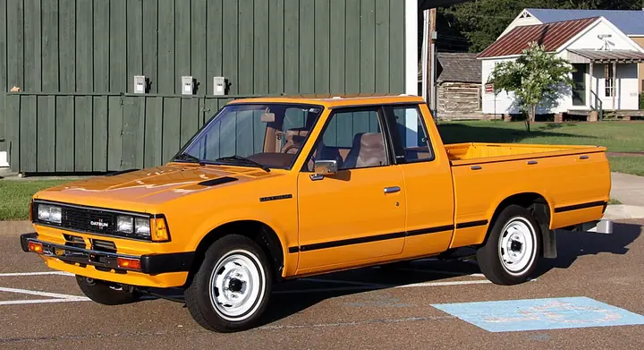
Datsun truck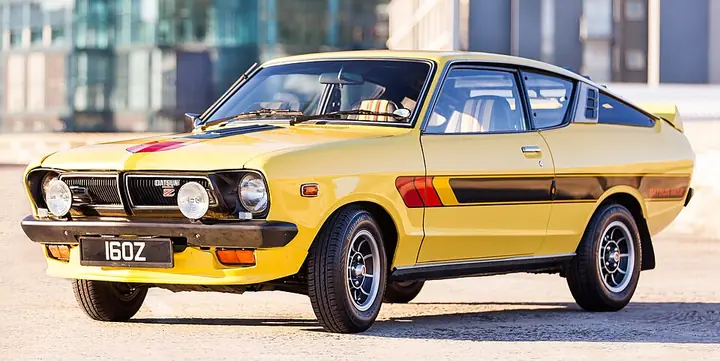
Datsun 160Z- Datsun Sado
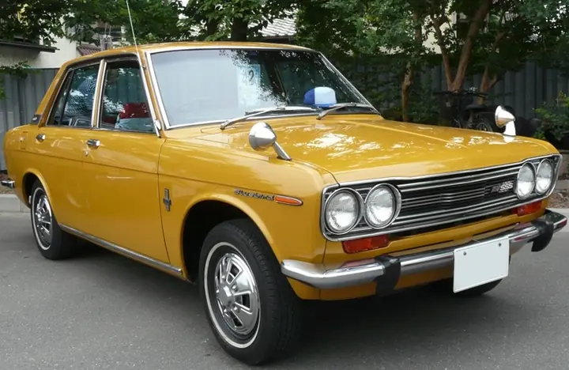
Datsun 510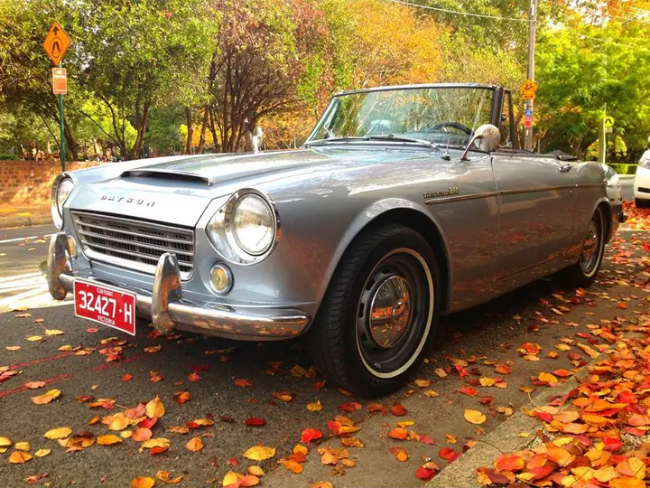
Datsun Sports- Datsun DB series
- Datsun DS series
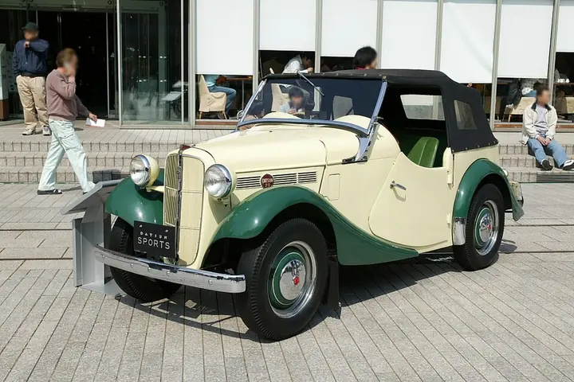
Datsun DC-3- Datsun DA
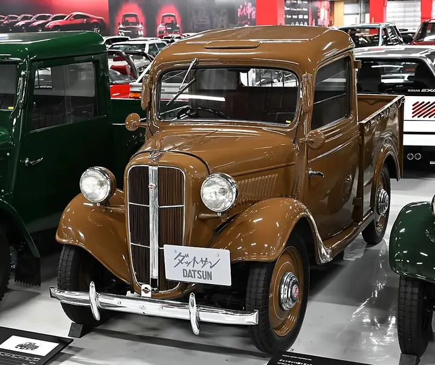
Datsun 17T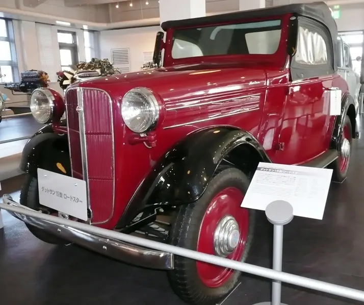
Datsun Roadster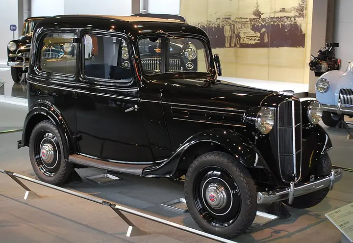
Datsun Type 16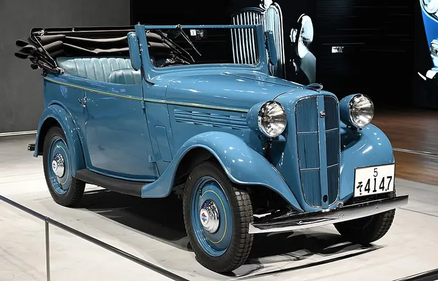
Datsun Type 17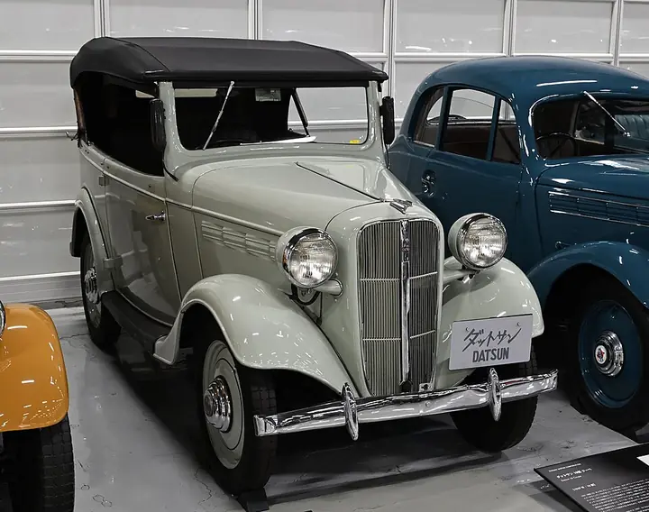
Datsun Type 15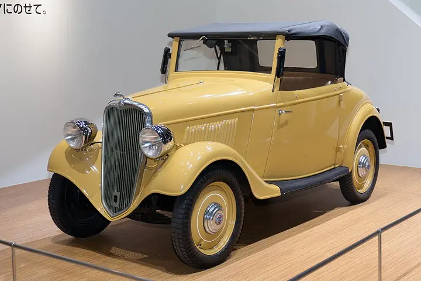
Datsun Type 14- Datsun Type 13
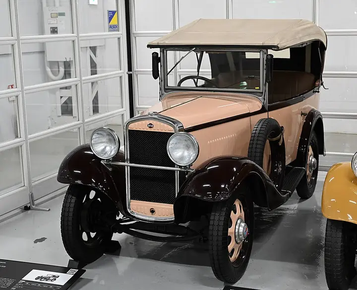
Datsun Type 12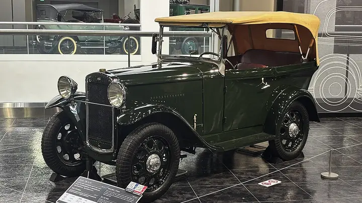
Datsun Type 11
Source: Wikipedia, CC BY-SA 4.0.